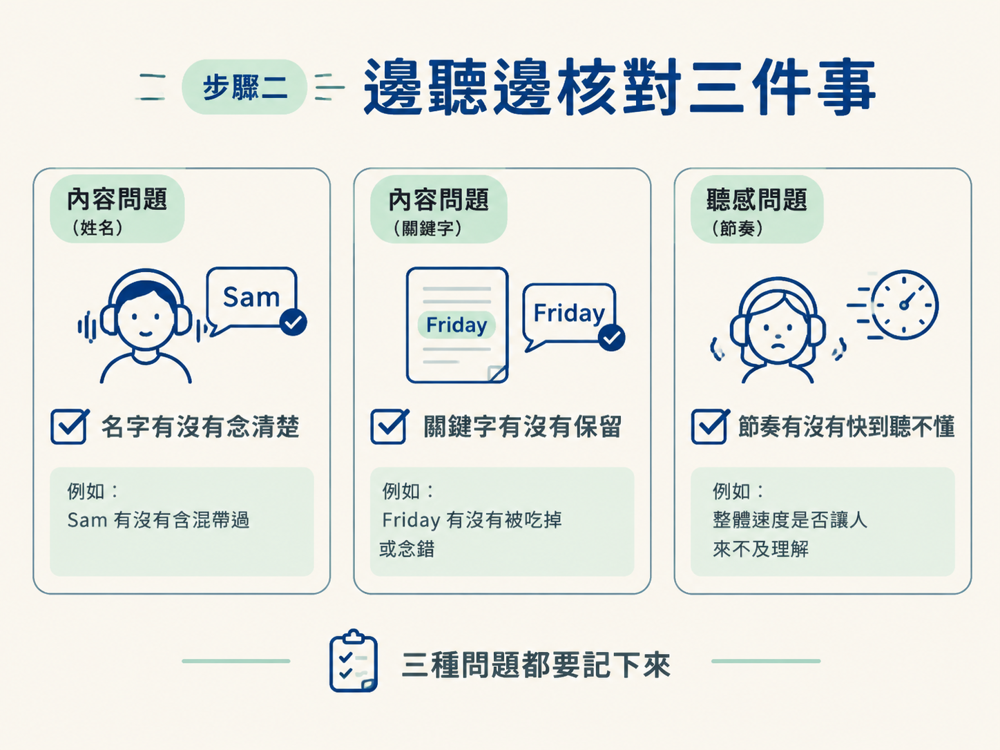
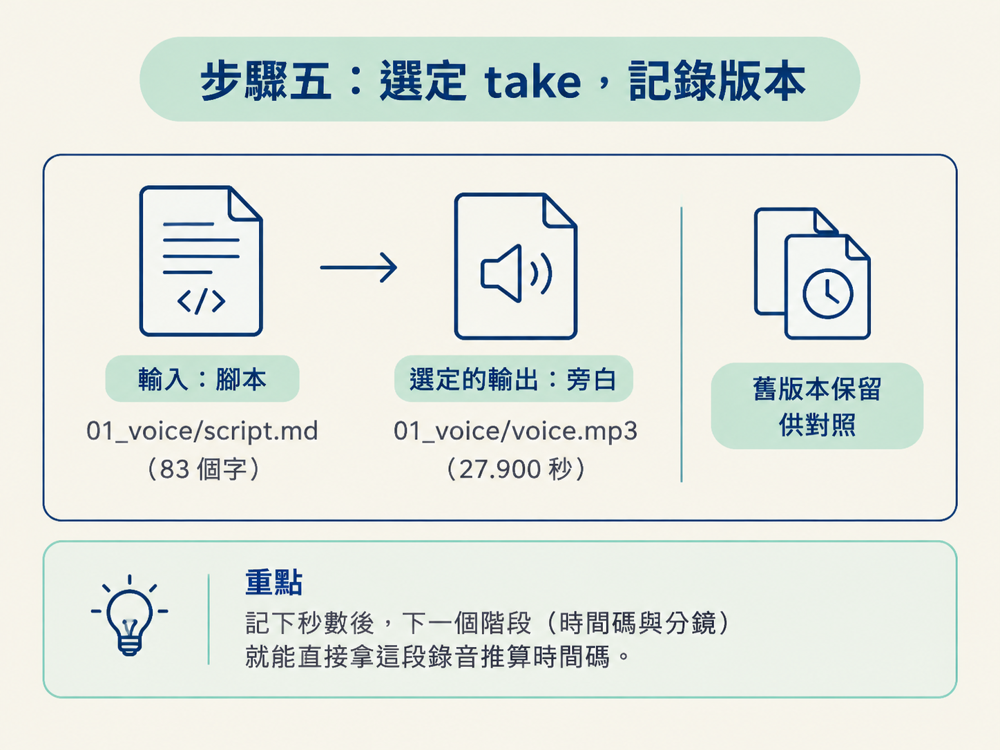

這是 voice 階段的最後檢查。你要開著腳本，把旁白從頭聽到尾，確認名字、關鍵字和節奏都沒有問題。若發現某一句念錯或太趕，就只修那一句，再放回前後文重聽。
完成後，你會留下三樣東西：
動手前，請先準備好定稿腳本 01_voice/script.md，以及剛產生的旁白檔。這一課由 AI 協助修正指定句子、記錄選定版本；你負責實際聽完整段，並判斷這個 take 能不能用。
旁白檔出現了，不代表工作已經結束。下一課會用這段真實的錄音來對齊每一張畫面的時間：某句話講到第幾秒，畫面就配到第幾秒。
因此，現在聽到的速度、停頓，以及每個字有沒有念清楚，之後都會影響畫面怎麼安排。先把 take 聽好、修好，再定下版本，下一課才有可靠的時間基準。
你要做：把 01_voice/script.md 放在旁邊，播放旁白，從頭聽到尾。不要跳段，也不要只聽幾秒就先判斷「應該可以了」。
整段聽完，你才能確定這份錄音真的能用。現在跳過的地方，之後可能變成畫面對不上聲音，或某句話在剪接時被卡掉。
播放時，眼睛對著腳本，依序檢查以下三點：
你可以把這三項想成三個檢查框：姓名、事實、節奏。名字和關鍵字錯了，是內容問題；速度太快，則是聽感問題。三種問題都要記下來。

如果發現某一句念錯或太趕，不要整段重做。請 AI 只針對那一句修正；若是自己錄製，則只重錄那一段。這樣可以保留其他已經沒有問題的內容，不必整段重新來過。
請 AI 修正時，要明確指出是哪一句、問題在哪裡，以及其他句子不要改。例如：
第 2 句「Sam will send the draft on Friday」念得太趕。
請把這一句重做慢一點，讓聽的人跟得上，其他句子不要動。關鍵是「只動這一句」。腳本就是你的定位工具：有文字對照，才能精準告訴 AI 問題發生在哪一行，而不是籠統地說「整段再自然一點」。
修正完成後，不要只單獨播放那一句。請把它放回整段錄音裡，連同前後句一起聽。
一句話單獨聽起來順，接回整段後卻可能出現節奏斷裂。例如前一句比較慢，修好的句子突然變快；或句尾和下一句的銜接不自然。只有放回上下文，你才能確認修正真的解決了問題。
你要檢查：修好的句子是否清楚、速度是否合適，以及它和前後句接起來是否自然。若仍然不對，就再次只指出需要調整的那一句。
整段聽過、問題也修好後，保留要使用的腳本與 take。舊版本先不要急著刪除，留著方便日後對照。
接著請 AI 記錄這個階段最後選定的版本，交給下一個階段接手。記錄要說清楚輸入和輸出，例如：
01_voice/script.md（83 個字）01_voice/voice.mp3（27.900 秒）留下秒數後，下一課就能直接從這段錄音推算時間碼，不必重新確認「最後用的是哪一個版本」。

請確認以下三項都已經到位：
三項都完成，voice 階段就可以收工。之後即使需要回頭修改，也能透過版本記錄知道當時選了什麼。
旁白產生完成不等於可以直接往下走。請開著腳本把整段聽完，核對 Sam 這類名字、Friday 這類關鍵字，以及整體節奏。發現問題時，只請 AI 修正那一句；修完後，再放回前後文重聽。最後保留選定的腳本與 take，留下舊版對照，並記錄最後使用的版本。因為下一課的每個畫面都會綁在這段真實錄音上，這一步就是先把時間基準定好。
下一節「時間碼與分鏡」會拿這段真實錄音，找出每句話實際落在第幾秒，再依照這些時間點規劃畫面。現在多花幾分鐘把 take 聽清楚、選定好，下一課就能順著正確的錄音往下做。